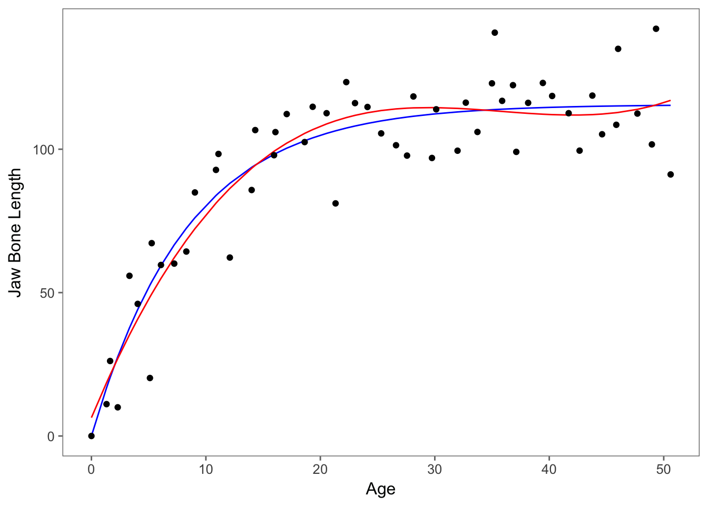

What does linear mean? Working with Polynomials and Non-linear Models
March 14, 2018
Contributed by Rachael Mady & Danielle Rutkowski
Linear versus Non-linear models
A non-linear model is a model that is not linear. This simple statement can be confusing if we don’t know what we are referring to as linear. When we say “linear” we are referring to the parameters in a model. This can be confusing because the independent variable can be transformed in ways that produce curves, such as a quadratic transformation.
A linear model is the sum of terms that are either constants or parameters multiplied by independent variables. Written out this looks like (in words and in greek letters): Dependent variable = constant + parameter*(independent variable) + ... + parameter*(Independent variable)
\[Y = \beta_0 + \beta_{1}X_{1} + \beta_{2}X_{2} +... + \beta_{k}X_{k}\] So, if an equation is not the sum of terms that are constants or the products of parameters and independent variables, you have a non-linear model, a model that is “not linear.”
First steps
When first working with your data, it is best to fit a linear model. While non-linear models provide more flexibility than linear models, they are not as easy to interpret and understand as linear models
Let’s work through an example. First load the data from the R Book by Crawley. It’s a record of individual deer’s jaw bone length and age.
data <-
"jaw_bone.csv" %>%
read.csv()Make sure that the data loaded correctly.
## age bone
## 1 0.000000 0.00000
## 2 5.112000 20.22000
## 3 1.320000 11.11130
## 4 35.240000 140.65000
## 5 1.632931 26.15218
## 6 2.297635 10.00100## age bone
## 49 45.85532 108.5123
## 50 46.01533 135.0000
## 51 47.70016 112.4295
## 52 48.96435 101.6761
## 53 49.32956 142.0000
## 54 50.60410 91.2000We are interested to see if a deer’s age predicts its jaw bone length. Let’s plot the data using ggplot to see what it looks like.
ggplot(data, aes(age,bone))+geom_point()+theme_few() + ylab("Jaw Bone Length") + xlab("Age")
We can already tell from the scatterplot of the data that the best model will probably not be linear. Still, let’s try to fit the data with a linear model and evaluate its fit with model diagnostic plots produced by the function plot()
lm <- lm(bone ~ age, data = data)
par(mfrow=c(2,2)) #to create space for all four graphs in the next function to show in one window
plot(lm)
Just looking at the first graph, Residuals vs. Fitted, we can tell that our linear model is a poor fit. There seems to be a trend when what we want is a random spread.
So, let’s look back at the scatterplot of the data.
ggplot(data, aes(age,bone))+geom_point()+theme_few() + ylab("Jaw Bone Length") + xlab("Age")
Before we jump to non-linear modelling, let’s try a log-transformation of our independent variable. Maybe we could fit a log-transformation on the age predictor variable because the graph does have a logarithmic shape.
lm_log <- lm(bone ~ log(age+1), data = data) #need the +1 with age because there is an age=0, which is undefined in log function
par(mfrow=c(2,2)) #to create space for all four graphs in the net function show in one plot window
plot(lm_log)
Still, the Residuals vs. Fitted graph looks awful.
Polynomial Models
Before we move on to non-linear models, we can see if a polynomial model would better fit our data. These kinds of models still take the form of a linear model as described above, despite the fact that the relationship between x and y is not a straight line. We can start by checking whether or not our data fit a quadratic model.
poly_2 <- lm(bone~ poly(age, 2), data = data)
summary(poly_2)##
## Call:
## lm(formula = bone ~ poly(age, 2), data = data)
##
## Residuals:
## Min 1Q Median 3Q Max
## -28.175 -9.360 1.275 8.089 37.905
##
## Coefficients:
## Estimate Std. Error t value Pr(>|t|)
## (Intercept) 93.979 2.062 45.585 < 2e-16 ***
## poly(age, 2)1 182.082 15.150 12.019 < 2e-16 ***
## poly(age, 2)2 -118.949 15.150 -7.852 2.48e-10 ***
## ---
## Signif. codes: 0 '***' 0.001 '**' 0.01 '*' 0.05 '.' 0.1 ' ' 1
##
## Residual standard error: 15.15 on 51 degrees of freedom
## Multiple R-squared: 0.8016, Adjusted R-squared: 0.7939
## F-statistic: 103.1 on 2 and 51 DF, p-value: < 2.2e-16We can also check our data against a cubic model.
poly_3 <- lm(bone ~ poly(age, 3), data = data)
summary(poly_3)##
## Call:
## lm(formula = bone ~ poly(age, 3), data = data)
##
## Residuals:
## Min 1Q Median 3Q Max
## -28.792 -7.741 2.077 9.071 27.278
##
## Coefficients:
## Estimate Std. Error t value Pr(>|t|)
## (Intercept) 93.979 1.857 50.597 < 2e-16 ***
## poly(age, 3)1 182.082 13.649 13.340 < 2e-16 ***
## poly(age, 3)2 -118.949 13.649 -8.715 1.33e-11 ***
## poly(age, 3)3 48.893 13.649 3.582 0.000771 ***
## ---
## Signif. codes: 0 '***' 0.001 '**' 0.01 '*' 0.05 '.' 0.1 ' ' 1
##
## Residual standard error: 13.65 on 50 degrees of freedom
## Multiple R-squared: 0.8421, Adjusted R-squared: 0.8327
## F-statistic: 88.92 on 3 and 50 DF, p-value: < 2.2e-16We can quickly visualize these two models, as well as a simple linear model, in comparison to our observed data using sjPlot.
sjp.poly(data$bone, data$age, c(1,2,3))## Polynomial degrees: 1
## ---------------------
## p(x^1): 0.000
##
## Polynomial degrees: 2
## ---------------------
## p(x^1): 0.000
## p(x^2): 0.000
##
## Polynomial degrees: 3
## ---------------------
## p(x^1): 0.000
## p(x^2): 0.000
## p(x^3): 0.001
The cubic model seems to be a better fit, with a higher R2 than the quadratic model. We can test to see if there are any significant differences in explanatory power between these two models using the anova() function.
anova(poly_2,poly_3)## Analysis of Variance Table
##
## Model 1: bone ~ poly(age, 2)
## Model 2: bone ~ poly(age, 3)
## Res.Df RSS Df Sum of Sq F Pr(>F)
## 1 51 11705.2
## 2 50 9314.7 1 2390.5 12.832 0.0007707 ***
## ---
## Signif. codes: 0 '***' 0.001 '**' 0.01 '*' 0.05 '.' 0.1 ' ' 1Looking at the p-value, we can determine from the this test that the cubic model is a better fit for our data than the quadratic model. We could continue to try higher order models as well, but it’s important to be careful to avoid over-fitting of the model. For now, we will stop at the cubic model, and test the fit of the model using the plot() function.
par(mfrow = c(2,2))
plot(poly_3)
Note We can also plot our data using ggplot2 instead of or in addition to sjPlot
ggplot(data,aes(age,bone))+
geom_point()+
geom_smooth(method="lm",se=FALSE,formula=y~poly(x,3))
Non-linear models
It looks like the cubic polynomial fits the data pretty well, but this is statistics and there is not just one right answer. Let’s see if non-linear models provide any better fit.
Since there are infinite number of options when it comes to choosing a non-linear model, it helps to consult colleagues and look at previous work in the literature to see if there are any non-linear models previously tested with data sets similar to yours.
In our case, there is theory to suggest that age predicts jaw bone length in terms of this non-linear function in which a,b, and c are the parameters, y is the dependent variable and x is the independent variable.
y=a-b*exp(-c*x)
Now, the tricky part of non-linear models is choosing the starting points. The algorithm will choose the best fit model step-by-step, but needs a starting point for the parameter values. The best places to look for this are the equation’s behavior at its limits, in this case where x=0 and x=infinity.
If we plug in x=0, we get y=a-b. If we “plug in” x=infinity, we get y=a.
Looking at the plot(bone~age,data=data), y = a = 120. Since y=a-b and at x=0, y looks like it equals about 10, 10=a-b –> b=110.
Picking a starting point for c is a bit harder. First, choose an (x,y) point along the imaginary best-fit line. Now, solve the above equation for c using the values you have previously selected for a and b. We get c=0.06369075.
With out values a=120, b=110, c=0.064, we can now input these into the function nls() and output the results using summary().
nlm <- nls(bone~a-b*exp(-c*age),start=list(a=120,b=110,c=0.064), data=data)
summary(nlm)##
## Formula: bone ~ a - b * exp(-c * age)
##
## Parameters:
## Estimate Std. Error t value Pr(>|t|)
## a 115.2528 2.9139 39.55 < 2e-16 ***
## b 118.6875 7.8925 15.04 < 2e-16 ***
## c 0.1235 0.0171 7.22 2.44e-09 ***
## ---
## Signif. codes: 0 '***' 0.001 '**' 0.01 '*' 0.05 '.' 0.1 ' ' 1
##
## Residual standard error: 13.21 on 51 degrees of freedom
##
## Number of iterations to convergence: 5
## Achieved convergence tolerance: 2.391e-06It seems that all parameters are significantly different from 0, but this does not mean that the parameters should be retained in the model! Looking at the estimates and their standard errors we see that a’s estimate does not differ from b’s by more than 2 standard errors (a convention).
So, let’s try a simpler model than this 3-parameter asymptotic exponential: a 2-parameter asymptotic exponential.Then, let’s compare the two.
nlm_2 <- nls(bone~a*(1-exp(-c*age)),start=list(a=120,c=0.064),data=data)
summary(nlm_2)##
## Formula: bone ~ a * (1 - exp(-c * age))
##
## Parameters:
## Estimate Std. Error t value Pr(>|t|)
## a 115.58056 2.84365 40.645 < 2e-16 ***
## c 0.11882 0.01233 9.635 3.69e-13 ***
## ---
## Signif. codes: 0 '***' 0.001 '**' 0.01 '*' 0.05 '.' 0.1 ' ' 1
##
## Residual standard error: 13.1 on 52 degrees of freedom
##
## Number of iterations to convergence: 5
## Achieved convergence tolerance: 1.369e-06anova(nlm,nlm_2)## Analysis of Variance Table
##
## Model 1: bone ~ a - b * exp(-c * age)
## Model 2: bone ~ a * (1 - exp(-c * age))
## Res.Df Res.Sum Sq Df Sum Sq F value Pr(>F)
## 1 51 8897.3
## 2 52 8929.1 -1 -31.843 0.1825 0.671Since p=0.671, we are justified in fitting this simpler model and accept this model as the minimial adequate model.Whenever we are choosing the best model, always keep in mind that parsimony is most preferred. Since the models aren’t significantly different, we are going to choose the one with less parameters. Let’s plot the model curve through the scatterplot of the data.
data$predictions <- predict(nlm_2) #assign the values from the model to a column in data sheet
ggplot(data,aes(x=age,y=bone))+
geom_line(aes(y=predictions), colour="blue")+
geom_point()+theme_few()+ylab("Jaw Bone Length") + xlab("Age")
Model Fit - S value
The fit of non-linear models, unlike linear models, cannot be compared using R-square values and instead rely on S values. S values give you the average absolute distance from the data points to the regression line using the units of the response variable. The smaller the value, the better your model fit.
This can be found in the summary() output labeled “Residual standard error.” Now, for these models it looks like they have relatively the same values, so you can either use the anova() or the S value to determine better fit.
If we want to compare visually as well, we can plot the predictions of the models together. If we want to compare the cubic polynomial to the second non-linear model, we can plot the models below. Red refers to the cubic polynomial and blue refers to the non-linear model. 
What model do I use?
That seems to always be the question and will continue to be the question! When a linear model doesn’t fit your data, the next step in selecting the best model depends on your specific data set, the literature, and many other things.
When considering non-linear models, it can be difficult to set up the models if there is no previous literature or theory on the best equation to use. Also, interpreting the effect of the independent variable on the dependent variable isn’t straight forward and there are no p-values that can be calculated.
If linear models, including polynomials and generalized linear models, and non-linear models aren’t working for you, it may be time to consider generalized additive models (GAMs).
Overview
we started with linear model <- lm (y~x) then we tried a curvy model <- lm(y~log(x+1)) #the +1 is because we had a 0 to account for then we tried different polynomial models which we can compare with anovas poly <-lm(y~x+I(x^2)) so finally we tried a nonlinear model <- nls(y~a*(1-e^-cx)) #which is always based on theory
Online resources
http://statisticsbyjim.com/regression/choose-linear-nonlinear-regression/ https://datascienceplus.com/first-steps-with-non-linear-regression-in-r/ http://blog.minitab.com/blog/adventures-in-statistics-2/what-is-the-difference-between-linear-and-nonlinear-equations-in-regression-analysis http://blog.minitab.com/blog/adventures-in-statistics-2/curve-fitting-with-linear-and-nonlinear-regression https://datascienceplus.com/fitting-polynomial-regression-r/ https://www.r-bloggers.com/fitting-polynomial-regression-in-r/ R book by Crawley